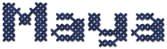
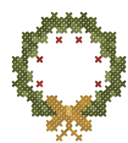
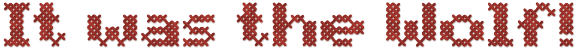
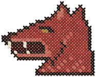

i will reorganize your spice rack while you shower and call it love


🦉
🦊Jordan
🐻Sam
knew her

overthinking a text for 40 minutes then just sending 'k' 💀

🍄Priya
🐸Theo
fell for it
The Wolf fooled 2 of 4.
+100 to Jordan and Sam. Maya earns +100 (+50 for each friend who knew her).
Village Heroes
- 🦉Maya300
- 🦊Jordan200
- 🐻Sam200